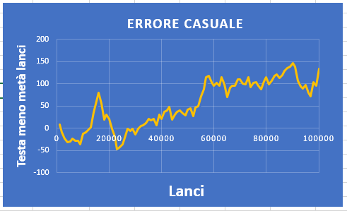
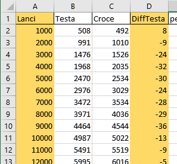
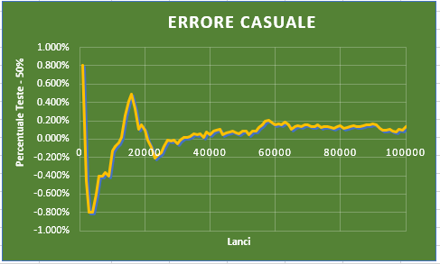
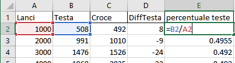
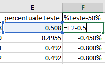

Possiamo creare dei grafici con i dati ottenuti per osservare visivamente la legge die grandi numeri
Il primo grafico permette di visualizzare come l'errore (cioè di quanto i risultati si allontanano dalla probabilità teorica del 50%) tende ad aumenta quando i lanci tendono ad un numero infinito.
Per realizzarlo prendiamo i dati della colonna evidenziata in giallo, che mostra quante volte in più o quante volte in meno la Testa si è allontanata o avvicinata al valore teorico. Selezionandola insieme al numero di lanci possiamo creare in Excel il seguente grafico.
Il secondo grafico permette di visualizzare lo stesso errore del primo grafico ma questa volta in proporzione al numero di lanci fatti. Se su 10 lanci escono 7 Teste, queste si sono discostate di 2 rispetto alla probabilità che è 5, se però su 1.000 lanci escono 508 queste si sono discostate di 8 rispetto alla probabilità che è 500. Nel primo esempio il discostamento è di 2/10 cioè 20% mente nel second è di 8/1000 cioè 0.8%. Ci si avvicina perciò sempre di più ad un errore sempre piu piccolo.
Per realizzarlo dobbiamo creare 2 nuove colonne, la prima è la percentuale delle Teste, la seconda è la percentuale delle teste meno il 50%. Ecco come si calcolano:
 
Selezionamo poi la colonna dei lanci e la colonna della percentuale delle teste meno il 50%, ed inseriamo il grafico su Excel.
ATTENZIONE: Una volta fatti i grafici asscurarsi di salvare il File con estensione .XLSX e NON .CSV SE NO I GRAFICI NON VERRANNO SALVATI!